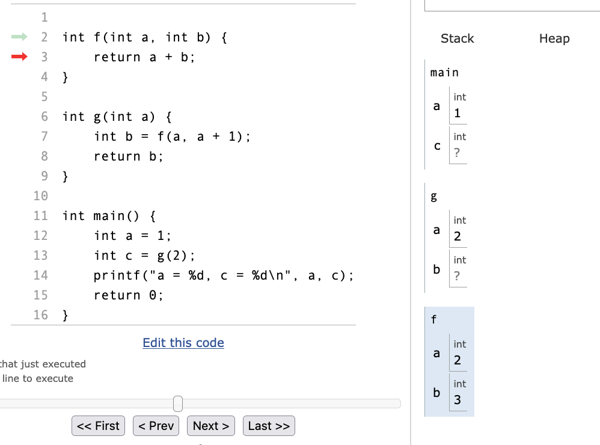

block-beta
columns 27
space:4 pushed["3"]:3 space pushed2["4"]:3 space:5 popped["4"]:3 space pushed3["5"]:3 space:4
space:27
space:27
space:12 D4["4"]:3 space:9 G4["5"]:3 space:4
space:4 C3["3"]:3 space D3["3"]:3 space E3["3"]:3 space F3["3"]:3 space G3["3"]:3
A2["2"]:3 space B2["2"]:3 space C2["2"]:3 space D2["2"]:3 space E2["2"]:3 space F2["2"]:3 space G2["2"]:3
A1["1"]:3 space B1["1"]:3 space C1["1"]:3 space D1["1"]:3 space E1["1"]:3 space F1["1"]:3 space G1["1"]:3
pushed -- "push" --> B2
pushed2 -- "push" --> C3
E3 -- "pop" --> popped
pushed3 -- "push" --> F3
style pushed fill:#bbf,color:#000
style pushed2 fill:#bbf,color:#000
style pushed3 fill:#bbf,color:#000
style popped fill:#bbf,color:#000
Cours 2 : Piles, files
TP2 : Piles, files
Dans le TP nous avons spécialisé le type liste dynamique en implémentant les structures de piles et de files, permettant moins d’opérations. Limiter le nombre d’opérations disponibles nous permet de simplifier l’objet conceptuel utilisé par nos algorithmes, et ainsi simplifier leur écriture. Dans les piles et les files, nous n’avons plus d’indices à considérer, mais simplement le sommet de la pile ou l’avant et l’arrière de la file.
I - Structure de pile
1) Définition
Une pile (stack en anglais) est un type abstrait de structure de données linéaire de type Last In, First Out, ou LIFO, c’est-à-dire qu’on accède à ses éléments par ordre inverse de l’ordre d’ajout.
Une pile permet les trois opérations suivantes :
- Déterminer si la pile est vide
- Empiler un élément : l’ajouter à la pile, à l’avant. On appelle souvent cette opération push.
- Dépiler un élément : obtenir le dernier élément à avoir été ajouté (celui à l’avant), et le retirer de la structure. On appelle souvent cette opération pop.
Ce type abstrait est restreint à ces trois opérations uniquement, car elles sont suffisantes dans de nombreuses utilisations.
2) Applications
On peut trouver des piles dans de nombreuses applications.
Annulation d’une action: Ctrl-Z
Dans un éditeur de texte, les opérations successives sur le fichier sont placées dans une pile. Appelons cette pile \(Stack_{ops}\). En appuyant sur Ctrl + Z (undo) on dépile les opérations une à une. Les opérations dépilées ne sont pas supprimées, car on peut vouloir les rétablir avec Ctrl + Y (redo). On empile alors les opérations annulées dans une deuxième pile, \(Stack_{undone}\). Ces opérations seront elles-mêmes dépilées à chaque rétablissement, et réempilées sur \(Stack_{ops}\). Lorsque l’on annule plusieurs opérations \(op_1\), \(op_2\), …, \(op_k\) et qu’on applique une nouvelle opération \(new\_op\), les opérations \(op_1\), \(op_2\), …, \(op_k\) empilées sur \(Stack_{undone}\) sont supprimées : on vide \(Stack_{undone}\) et on empile \(new\_op\) sur \(Stack_{ops}\).
| Opération | Texte | Stack_ops | Stack_undone |
|---|---|---|---|
'A' |
A |
[ 'A' ] |
[ ] |
'B' |
AB |
[ 'B', 'A' ] |
[ ] |
'C' |
ABC |
[ 'C', 'B', 'A' ] |
[ ] |
| Ctrl + Z (undo) | AB |
[ 'B', 'A' ] |
[ 'C' ] |
| Ctrl + Z (undo) | A |
[ 'A' ] |
[ 'B', 'C' ] |
| Ctrl + Y (redo) | AB |
[ 'B', 'A' ] |
[ 'C' ] |
'D' |
ABD |
[ 'D', 'B', 'A' ] |
[ ] |
De même, dans un navigateur web, les options “Page précédente” et “Page suivante” sont implémentées de la même manière, avec deux piles : \(Stack_{visited}\) stockant les dernières pages visitées, et \(Stack_{backtracked}\) sur laquelle on empile la page actuelle lorsque l’on clique sur “Page précédente”. Si l’on clique plusieurs fois sur “Page précédente” puis sur un lien, la pile \(Stack_{backtracked}\) est vidée, et l’on recommence à empiler les pages sur \(Stack_{visited}\).
Evaluation d’expression en notation polonaise inversée (postfixée)
Une expression arithmétique est dite notée en notation polonaise inversée, ou notation postfixée, si les opérateurs sont situés immédiatement après les opérandes. Par exemple, dans l’expression suivante :
1 2 + 3 *L’opération d’addition est appliquée à 1 et 2, avant que le résultat ne soit utilisé par l’opérateur * pour appliquer l’opération 3 * 3. L’expression s’évalue donc à 9, elle est équivalente à
(1 + 2) * 3(en notation infixe, la notation usuelle).
L’objet de la partie 1 du TP2 est d’implémenter un évaluateur d’expressions en notation polonaise inversée, à l’aide d’une pile. On parcourt l’expression élément par élément.
- Lorsque le premier élément (token) de l’expression est un nombre, l’empiler sur la pile.
- Lorsque le premier élément de l’expression est un opérateur
op, dépiler deux éléments de la pile.- S’il ne s’agit pas de deux nombres, l’expression est mal formée. Renvoyer une erreur.
- Sinon, pour les deux nombres
beta, appliquer l’opérationa op bpour obtenir le résultatc. Empilercsur la pile.
- Une fois l’expression entièrement parcourue, la pile doit contenir exactement un élément, qui est un nombre. C’est le résultat de l’évaluation de la formule.
Exemple :
La formule est 3 4 5 + * 2 -.
| Élément de l’expression | Action | État de la pile |
|---|---|---|
3 |
Empiler 3 |
[ 3 ] |
4 |
Empiler 4 |
[ 4, 3 ] |
5 |
Empiler 5 |
[ 5, 4, 3 ] |
+ |
Dépiler 5 puis 4, empiler 4 + 5 = 9 |
[ 9, 3 ] |
* |
Dépiler 9puis 3, empiler 3 * 9 = 27 |
[ 27 ] |
2 |
Empiler 2 |
[ 2, 27 ] |
- |
Dépiler 2 puis 27, empiler 27 - 2 = 25 |
[ 25 ] |
La pile ne contient qu’un seul élément, 25, c’est donc le résultat de l’évaluation.
L’expression est donc équivalente à (3 * (4 + 5)) - 2, mais a l’avantage de ne pas nécessiter de parenthèses.
En outre, les expression en forme infixe nécessitent de tenir compte de l’ordre de précédence des opérateurs : 3 + 2 * 5 s’évalue à 3 + (2 * 5) à cause de la priorité de * sur +. L’évaluation de formules en notation polonaise inversée permet de ne pas avoir à tenir compte de la précédence des opérateurs.
Pile d’appel lors de l’exécution d’un programme
Lors de l’exécution d’un programme, la machine dispose d’une pile d’appel pour stocker les informations utiles lorsqu’elle doit procéder à un appel de fonction.
Par exemple, pour le code suivant :
int f(int a, int b) {
return a + b;
}
int g(int a) {
int b = f(a, a + 1);
return b;
}
int main() {
int a = 1;
int c = g(2);
printf("a = %d, c = %d\n", a, c);
return 0;
}Le processeur va dans un premier temps exécuter la fonction main, en stockant sur la pile (stack) ses variables locales.
stateDiagram
Main : (main) a = 1, c = ?
Lorsqu’il rencontre un appel à la fonction g, il met en pause son exécution, et exécute la fonction g pour calculer la valeur à mettre dans c. Il copie donc la valeur 2 dans la variable locale a de g, qu’il place dans une nouvelle entrée de la pile.
stateDiagram
Main: (main) a = 1, c = ?
G: (g) a = 2, b = ?
Main --> G
La fonction doit alors effectuer un appel à f, le processeur crée une nouvelle entrée dans la pile, en copiant les valeurs de a et a + 1 dans les variables locales a et b de f.
stateDiagram
Main : (main) a = 1, c = ?
G : (g) a = 2, b = ?
F : (f) a = 2, b = 3
Main --> G
G --> F
La fonction f renvoie a + b = 5. Le processeur peut alors dépiler l’entrée f de la pile, et donner la valeur 5 à b.
stateDiagram
Main : (main) a = 1, c = ?
G : (g) a = 2, b = 5
Main --> G
La fonction g renvoie la valeur de b, donc 5. Le processeur dépile l’entrée g de la pile et place la valeur 5 dans c.
stateDiagram
Main : (main) a = 1, c = 5
La fonction printf affiche :
a = 1, c = 5La valeur de la variable locale a bien été sauvegardée durant les appels aux fonctions g et f.
Une telle pile d’appel est utilisée dans la plupart des langages de programmation, mais elle est particulièrement présente dans le langage C, du fait de son positionnement de langage de programmation de bas-niveau, c’est-à-dire proche de la machine.
On peut visualiser la pile d’appel et le tas avec CTutor :

3) Implémentation
Il existe plusieurs manières d’implémenter une pile, dépendant des propriétés recherchées. Nous pouvons réutiliser la structure de liste dynamique implémentée au TP1, afin d’implémenter nos opérations de pile.
// stack.h
#include "list_linked.c" // Implémentation par listes chaînées
typedef struct {
t_list list;
} t_stack;
// stack.c
t_stack create_empty_stack() {
t_stack stack;
stack.list = create_empty_list();
return stack;
}
// Returns true if the stack is empty
bool is_empty_stack(t_stack *stack) {
return length(&stack->list) == 0;
}
// Pushes the value val to the top of the stack
void push(t_stack *stack, T val) {
push_front(&stack->list, val);
}
// Returns the value at the top of the stack
T get_top(t_stack *stack) {
return get(&stack->list, 0);
}
// Returns the value at the top of the stack and deletes it from the stack
T pop(t_stack *stack) {
T t = get_top(stack);
delete_at(&stack->list, 0);
return t;
}La structure de liste chaînée (à une seule extrêmité) est pertinente pour implémenter une pile : les opérations push_front(list, val) d’ajout en tête, get(list, 0) d’accès en tête, et delete_at(list, 0) de suppression en tête ont toutes une complexité constante \(O(1)\).
On a ici procédé à une encapsulation : on a caché l’implémentation d’une structure derrière une interface que l’on a mise à disposition de l’utilisateur. L’utilisateur de notre bibliothèque devra nécessairement passer par nos fonctions s’il souhaite accéder à la structure ou la modifier. Cela a le double avantage :
- pour l’utilisateur de ne pas se soucier des détails d’implémentation de la structure qu’il utilise.
- pour le développeur de la structure de garantir que l’utilisateur ne modifiera pas lui-même les variables de la structure de manière imprévisible.
Nous avons également pu réutiliser du code existant, en spécialisant la structure de liste dynamique pour notre usage. L’implémentation d’une structure aussi générale que t_list dans le TP1 nous permet à présent d’implémenter une pile très facilement, en appelant des fonctions existantes avec les bons paramètres.
II - Structure de file
1) Définition
Une file (en anglais queue) est un type abstrait de structure de données linéaire, de type First In, First Out, ou FIFO, c’est-à-dire qu’on accède à ses éléments par ordre d’ajout, à la manière d’une file d’attente (premier arrivé, premier servi).
Une file permet les trois opérations suivantes :
- Déterminer si la file est vide
- Enfiler un élément : l’ajouter à la file, à l’arrière. On appelle souvent cette opération push ou enqueue.
- Défiler un élément : obtenir l’élément à l’avant de la file (le plus ancien encore présent par ordre d’ajout), et le retirer de la structure. On appelle souvent cette opération pop ou dequeue.
block-beta
columns 27
space:4 pushed["3"]:3 space pushed2["4"]:3 space:9 pushed3["5"]:3 space:4
space:27
space:27
space:12 D4["4"]:3 space E4["4"]:3 space:5 G4["5"]:3 space:4
space:4 C3["3"]:3 space D3["3"]:3 space E3["3"]:3 space F3["4"]:3 space G3["4"]:3
A2["2"]:3 space B2["2"]:3 space C2["2"]:3 space D2["2"]:3 space E2["2"]:3 space F2["3"]:3 space G2["3"]:3
A1["1"]:3 space B1["1"]:3 space C1["1"]:3 space D1["1"]:3 space:5 F1["2"]:3 space G1["2"]:3
space:27
space:27
space:16 popped["1"]:3 space:8
pushed -- "enqueue" --> B2
pushed2 -- "enqueue" --> C3
E2 -- "dequeue" --> popped
pushed3 -- "enqueue" --> F3
style A1 fill:#feb,color:#000
style A2 fill:#feb,color:#000
style B1 fill:#feb,color:#000
style B2 fill:#feb,color:#000
style C1 fill:#feb,color:#000
style C2 fill:#feb,color:#000
style C3 fill:#feb,color:#000
style D1 fill:#feb,color:#000
style D2 fill:#feb,color:#000
style D3 fill:#feb,color:#000
style D4 fill:#feb,color:#000
style E2 fill:#feb,color:#000
style E3 fill:#feb,color:#000
style E4 fill:#feb,color:#000
style F1 fill:#feb,color:#000
style F2 fill:#feb,color:#000
style F3 fill:#feb,color:#000
style G1 fill:#feb,color:#000
style G2 fill:#feb,color:#000
style G3 fill:#feb,color:#000
style G4 fill:#feb,color:#000
style pushed fill:#fb8,color:#000
style pushed2 fill:#fb8,color:#000
style pushed3 fill:#fb8,color:#000
style popped fill:#fb8,color:#000
2) Applications
Comme les piles, les files sont utilisées dans de nombreuses applications.
Mise en attente d’objets par ordre d’arrivée
Comme dans le cas d’une file d’attente de personnes, de nombreuses applications informatiques nécessitent de mettre en attente des objets par ordre d’arrivée. Par exemple dans une situation où des utilisateurs doivent se connecter à un serveur saturé, et doivent attendre des déconnexions d’utilisateurs pour être connectés au serveur. Les utilisateurs sont placés dans une file et traités par ordre d’arrivée.
Ordonnancement des processus par le système d’exploitation
Le système d’exploitation de la machine s’occupe de gérer les différents processus qui s’exécutent par alternance. Pour ce faire, il place les processus dans plusieurs files d’attentes :
- Job queue : les processus sont initialement placées dans la file des tâches à réaliser, en attente d’exécution.
- Ready queue : les processus prêts à être exécutés sont ensuite acheminés vers la Ready queue, et attendent que le processeur soit disponible.
- L’ordonnanceur sélectionne ensuite les processus dans la Ready queue et les donne au CPU afin qu’il les exécute.
En pratique, on utilisera plutôt une structure de file de priorité, où les éléments sont classés selon un niveau de priorité et défilés dans cet ordre. Il existe des méthodes efficaces pour implémenter les files de priorités, comme les tas binaires, un cas particulier d’arbre binaire (voir le cours 4).
File d’attente de message
Pour la communication entre processus ou de serveur à serveur, on utilise des files d’attente de message, pour mettre les messages en attente et les traiter par ordre d’envoi.
Parcours en largeur et parcours en profondeur
Supposons que l’on souhaite parcourir un arbre abstrait comme celui-ci.
stateDiagram
A1 : 1
A2 : 2
A3 : 3
A4 : 4
A5 : 5
A6 : 6
A7 : 7
A8 : 8
A9 : 9
A10 : 10
A11 : 11
A12 : 12
A13 : 13
A14 : 14
A15 : 15
A16 : 16
A17 : 17
A18 : 18
A19 : 19
A20 : 20
A1 --> A2
A1 --> A3
A1 --> A4
A1 --> A5
A2 --> A6
A2 --> A7
A2 --> A8
A3 --> A9
A3 --> A10
A4 --> A11
A5 --> A12
A5 --> A13
A5 --> A14
A6 --> A15
A6 --> A16
A7 --> A17
A8 --> A18
A9 --> A19
A9 --> A20
On part du sommet 1, et on place ses voisins dans une file. Ensuite, on défile le premier élément de la file, et on enfile ses voisins. On répète le processus jusqu’à ce qu’il n’y ait plus de sommets à explorer
- Après la première étape, la file contient les sommets
[ 2, 3, 4, 5 ]dans cet ordre. - On défile le sommet
2, on place ses voisins dans la file : la file contient[ 3, 4, 5, 6, 7, 8 ]. - On défile le sommet
3, on place ses voisins dans la file : la file contient[ 4, 5, 6, 7, 8, 9, 10 ].
Ce type de parcours de l’arbre est appelé parcours en largeur (breadth-first search, BFS) : on parcourt les voisins d’un sommet, puis les voisins des voisins, puis leurs voisins, et ainsi de suite.
Si l’on remplace la file par une pile, le parcours est différent.
- Après la première étape, la pile contient les sommets
[ 5, 4, 3, 2 ]dans cet ordre. - On dépile le sommet
5, on place ses voisins dans la pile : la pile contient[ 14, 13, 12, 5, 4, 3, 2 ]. - On dépile le sommet
14, on place ses voisins dans la pile : la pile contient[ 29, 28, 13, 12, 5, 4, 3, 2].
Ce type de parcours est appelé parcours en profondeur (depth-first search, DFS) : on avance dans une branche en prenant le premier voisin, puis le premier voisin de ce sommet, et ainsi de suite, jusqu’à être bloqué. Ensuite, on recule d’une position (backtrack), et on emprunte cette fois la voie du deuxième voisin de ce sommet. On répète le processus jusqu’à ce qu’il n’y ait plus de sommets disponibles.
stateDiagram
A1 : 1 <FONT color=red>1</FONT>
A2 : 2 <FONT color=red>13</FONT>
A3 : 3 <FONT color=red>8</FONT>
A4 : 4 <FONT color=red>6</FONT>
A5 : 5 <FONT color=red>2</FONT>
A6 : 6 <FONT color=red>18</FONT>
A7 : 7 <FONT color=red>16</FONT>
A8 : 8 <FONT color=red>14</FONT>
A9 : 9 <FONT color=red>10</FONT>
A10 : 10 <FONT color=red>9</FONT>
A11 : 11 <FONT color=red>7</FONT>
A12 : 12 <FONT color=red>5</FONT>
A13 : 13 <FONT color=red>4</FONT>
A14 : 14 <FONT color=red>3</FONT>
A15 : 15 <FONT color=red>20</FONT>
A16 : 16 <FONT color=red>19</FONT>
A17 : 17 <FONT color=red>17</FONT>
A18 : 18 <FONT color=red>15</FONT>
A19 : 19 <FONT color=red>12</FONT>
A20 : 20 <FONT color=red>11</FONT>
A1 --> A2
A1 --> A3
A1 --> A4
A1 --> A5
A2 --> A6
A2 --> A7
A2 --> A8
A3 --> A9
A3 --> A10
A4 --> A11
A5 --> A12
A5 --> A13
A5 --> A14
A6 --> A15
A6 --> A16
A7 --> A17
A8 --> A18
A9 --> A19
A9 --> A20
Ces deux parcours s’appliquent plus généralement aux graphes : un graphe est un ensemble de noeuds (sommets, en anglais vertex / vertices) reliés par des liaisons (arêtes, en anglais edges) et pouvant contenir des cycles. Dans un parcours en largeur ou en profondeur, on veille à ne pas passer deux fois par le même sommet, en marquant les sommets déjà parcourus.
Le parcours en profondeur peut être utilisé dans le parcours de labyrinthe : on avance en suivant le mur de droite jusqu’à trouver la sortie. Il s’agit de la méthode de la main droite.
Le parcours en largeur est lui utilisé pour déterminer le plus court chemin d’un sommet vers tous les autres sommets d’un graphe.
3) Implémentation
A la différence des files, on doit ici considérer des listes chaînées à deux extrêmités, car celles-ci permettent des opérations d’ajout en dernière position et de retrait en première position en temps constant (les listes chaînées classiques nécessitent un temps linéaire pour ajouter en dernière position).
// queue.h
#include "list_double-ended.h" // Implémentation par liste à deux extrêmités
typedef struct {
t_list list;
} t_queue;
// queue.c
t_queue create_empty_queue() {
t_queue queue;
queue.list = create_empty_list();
return queue;
}
// Returns true if the queue is empty
bool is_empty_queue(t_queue *queue) {
return length(&queue->list) == 0;
}
// Pushes the value val to the back of the queue
void push_queue(t_queue *queue, T val) {
push_back(&queue->list, val);
}
// Returns the value at the front of the queue
T get_front_queue(t_queue *queue) {
return get(&queue->list, 0);
}
// Returns the value at the front of the queue and deletes it from the queue
T pop_queue(t_queue *queue) {
T t = get_front_queue(queue);
delete_at(&queue->list, 0);
return t;
}